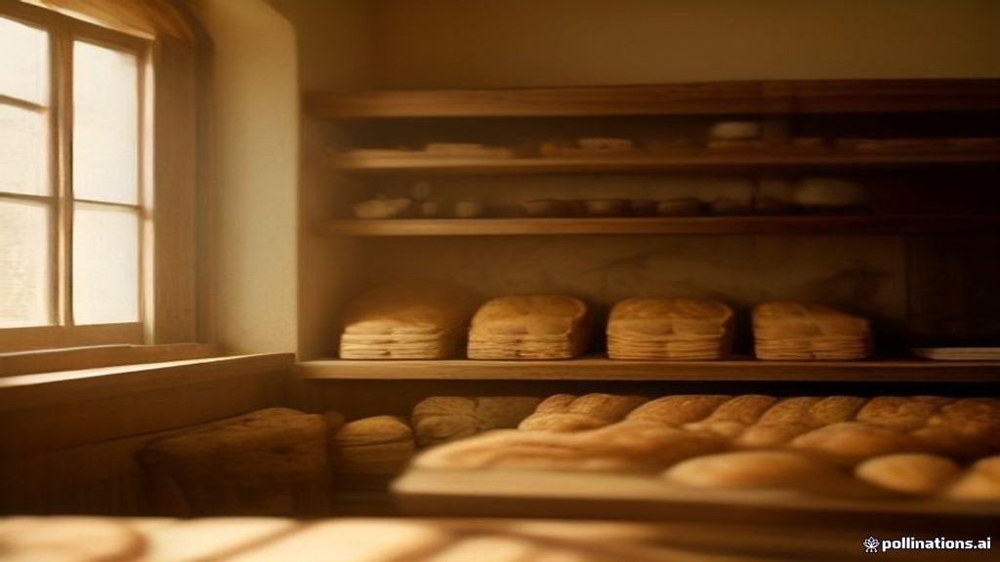
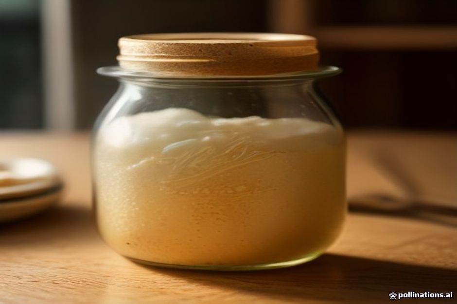
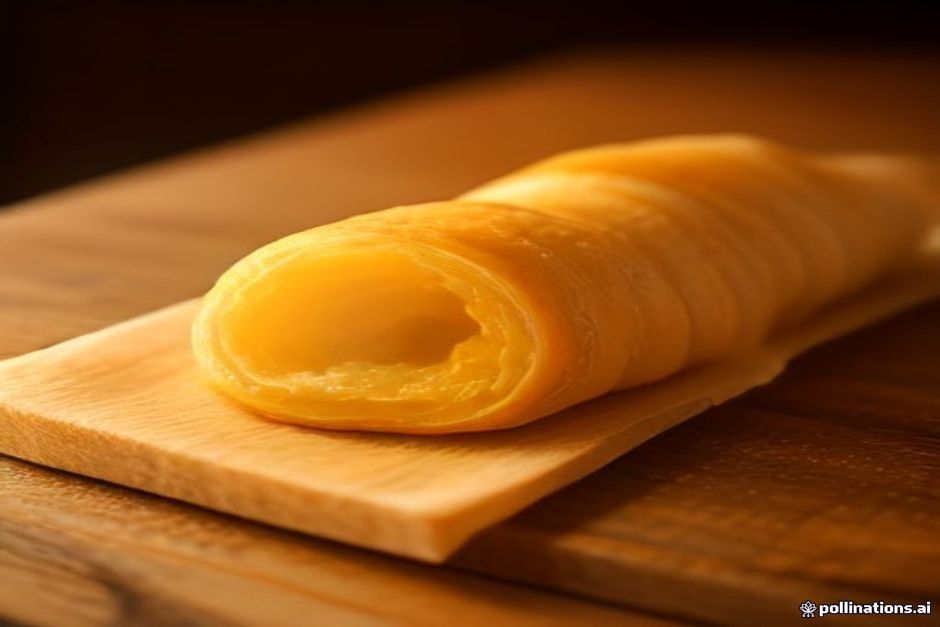
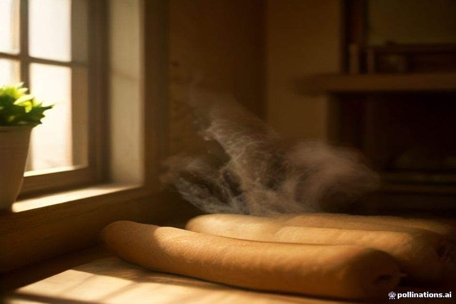
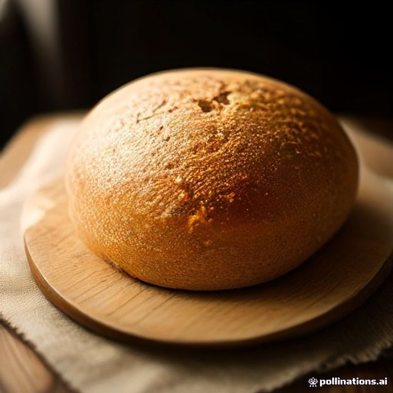
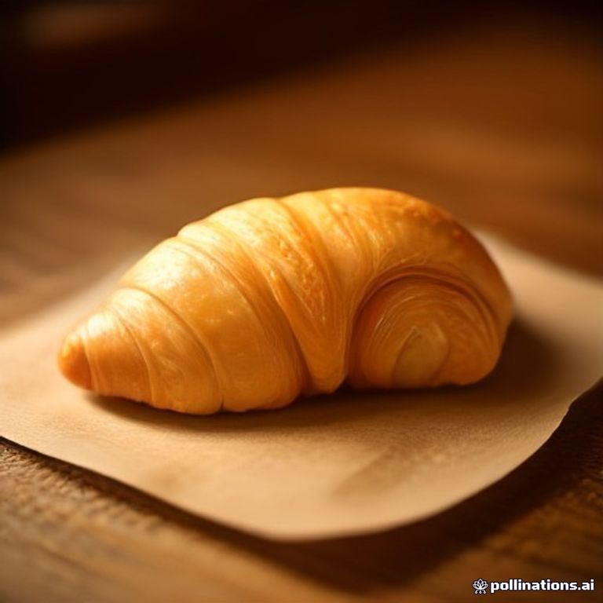
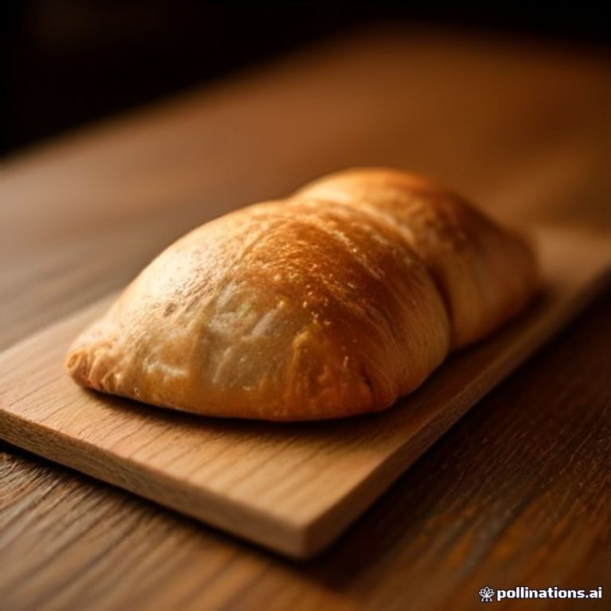
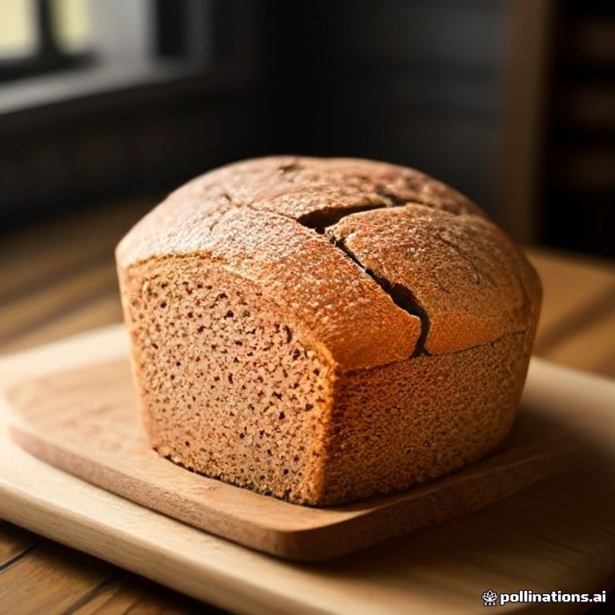
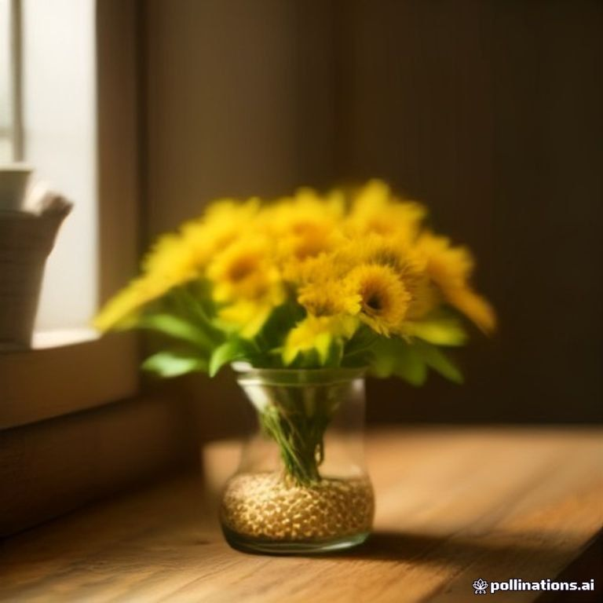
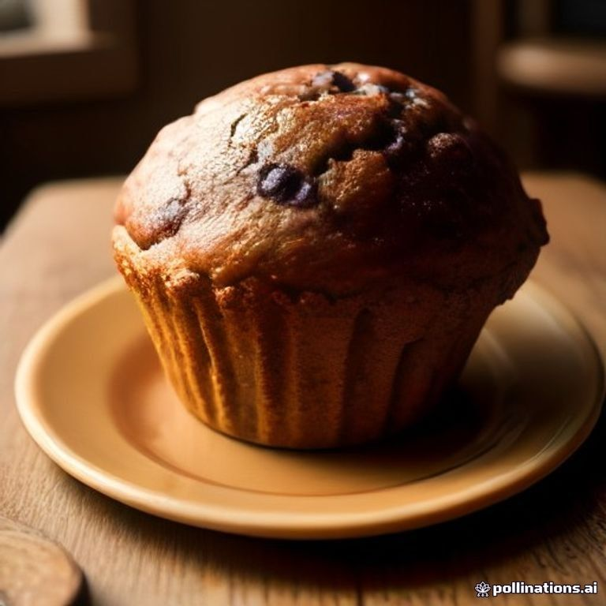

Descubre cómo la fermentación lenta, la precisión artesanal y el arte puro se encuentran en cada corteza hecha completamente a mano durante 48 horas.
Interactúa con cada fase del desarrollo artesanal. Cada proceso cuenta la historia técnica de cómo transformamos ingredientes simples en obras maestras.

Cultivo vivo que ha estado activo durante 30 años. Cada fermentación lenta desata bacterias naturales que transforman granos simples en complejidad profunda de sabor. La malla de gluten se desarrolla perfectamente, creando esa miga abierta y esponjosa.

Mantequilla francesa laminada 72 veces. Cada pliegue crea capas de aire que explotan delicadamente en tu boca. Una danza de precisión y paciencia que solo el tiempo y las manos expertas pueden crear.

La forma clásica francesa que exige precisión geométrica absoluta. Vapor en el horno genera esa corteza impenetrable que resuena al morder, revelando una miga ligera, abierta y esponjosa. Puro arte en carbohidratos.

Fermentación 48 h · corteza oscura · miga abierta

72 capas · mantequilla francesa · hojaldre ligero

Chocolate amargo · laminación artesanal · tibio

Centeno oscuro · 36 h de fermentación · sabor profundo

Sésamo, girasol y lino · corteza crujiente

Arándanos frescos · horneado el mismo día
Únete a nuestra comunidad. Descubre cada día las novedades, procesos en tiempo real y momentos detrás de cámaras de nuestro taller.
❤️ Seguir en Instagram